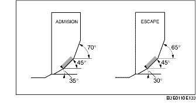

CONTROL/REPARACION ASIENTO DE VALVULA
B3E011010102201
1. Medir la amplitud de contacto del asiento.
-
• Si no está conforme a lo especificado, rectificar el asiento de válvula mediante una fresa de 45° y/o rectificar la cara de la válvula.
-
Amplitud estándar:
-
1,2-1,6 mm (0,048-0,062 in)
2. Controlar que la cara de la válvula se posicione en el centro del asiento de la válvula .
-
(1) Si la válvula está demasiado descentrada hacia el exterior, corregir el asiento de válvula mediante una fresa de 70° (ADMISION) o 65° (ESCAPE) y una fresa de 45°.
-
(2) Si la válvula está demasiado descentrada hacia el interior del asiento, corregir el asiento de válvula mediante una fresa de 30° (ADMISION) o de 0° (ESCAPE) y una fresa de 45°.

3. Controlar si el asiento de válvula está hundido. Medir la longitud saliente (dimensión L) del vástago de válvula.
-
• Si no está conforme a lo especificado, sustituir la culata.
-
Dimensión L estándar:
-
ADMISION: 40,64-42,24 mm (1,600-1,662 in)
-
ESCAPE: 40,50-42,10 mm (1,595-1,657 in)